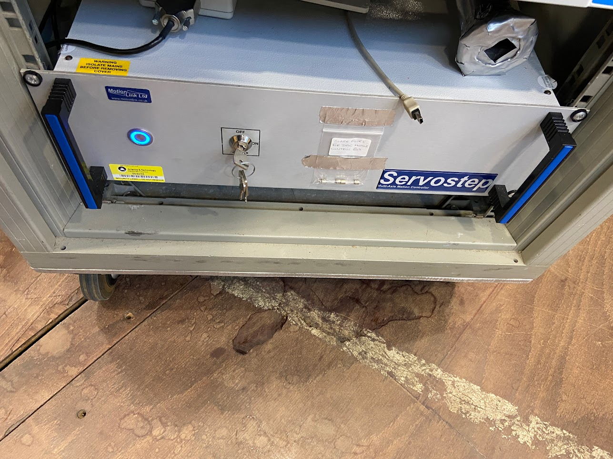

PEARL
Warning
These instrument details pages provide historical context about the devices on a specific instrument, at the time they were migrated to IBEX. These pages may not be up to date with the latest instrument configuration.
This page collects information that will be useful for the implementation of the IBEX control system on PEARL.
Background & Timeline
PEARL is a powder diffraction instrument on TS1 at ISIS, dedicated to high-pressure studies. The PEARL web page describes the background to the instrument.
PEARL networking
PEARL has a slightly complicated networking situation, where they have some patch panels that propagate through to next to their sample prep/setup cabin.
To summarise:
Ports SC0-SC10 are patched through to the top patch panel in the setup cabin. SC6-9 are actually on the outside wall of the setup cabin, near where their vacuum tanks live. W269-272 should patch from the setup cabin to the patch panel at the back of the main cabin.
Galils, choppers etc are fed through DS31-DS35 which lives in the little server room down the stairs.
There is a large patch panel in the main PEARL cabin which links to the blockhouse ports, sat above some Eurotherm racks. The confusing bit - there are also ports that live outside the setup cabin, on the left side above the beamline itself. Ports 1-5 here ALSO route through to the large rack-mounted patch panel which lives in the main cabin. For example, port 3 outside the setup cabin, commonly used for the PACE 5000 pressure controller, routes to port 3 on the large patch panel (in the rack in the PEARL cabin). This is then fed to the Moxa which is sat above. Each of the ports on the large patch panel have a code that looks like 9MC4180 which means nothing to us - we only care about the patch panel number which is underneath.
PEARL Equipment
The equipment listed below is used on PEARL. Please add new information (e.g. new items of equipment, new notes, information about drivers, etc. to this table).
Manufacturer |
Model |
Type |
Connection |
Driver |
Notes |
|---|---|---|---|---|---|
ISIS |
DAE 2 |
Detector Electronics |
Ethernet |
||
ISIS |
Mk3 Chopper |
Chopper |
Ethernet/.NET |
#169 |
|
GALIL |
Motion Controller |
Ethernet |
|||
Linear Motors and Motion Controller |
RS-232 |
||||
??? |
??? |
1 x 4-blade jaws |
|||
TPG300 |
ISIS Vacuum System |
RS232 |
#216 |
||
Eurotherm |
Temperature Controller |
All models at ISIS |
RS-232 |
||
LakeShore |
336 |
Temperature Controller |
RS-232 |
||
~Oxford Instruments~ |
~ITC503~ |
~Cryogenic System~ |
|||
Sorensen |
High-PT |
PSU |
|||
Pace |
5000 |
Pressure Controller |
RS-232 |
||
ISIS |
PEARL |
Pressure Cell Controller |
|||
ISIS |
PEARL |
MEAS M905 Pressure Transducer |
RS485 |
||
ISIS |
PEARL |
Temperature Controller |
|||
ISIS |
??? |
Cold Valve |
Note: DAE
Main Detector banks + one working fixed monitor upstream of sample position.
Note: Galil
PEARL uses Galil controllers.
Note: LinMot
PEARL uses LinMot P0x-23 motors, controlled by LinMot drives.
LinMot User Manual
Alignment Mirror: Driven either IN or OUT by a single LinMot axis.
Also jaw sets mentioned below
Note: Jaws
Two sets of jaws are driven by LinMot P0x-23 motors…
… and one by Galil
PEARL has custom screens for controlling the jaws
See
C:\LabVIEW Modules\Instruments\PEARL\PEARL Jaws\Screens
Note: ISIS Mk3 Choppers
PEARL has two ISIS Mk3 choppers.
Note: Pfeiffer
Model TPG 26x, used on the furnace vacuum system
Model TPG 300, used on the tank/guide vacuum system
Note: Eurotherm
Three Eurotherms in use on PEARL. Used to control temperature of all top-loading CCR/ He-cryostats and furnaces.
Note: LakeShore
There are EPICS drivers for a variety of Lakeshore temperature controllers. Documentation on the Lakeshore 336 IOC setup can be found here.
Note: Sorensen
Sorensen appear to have been taken over by AMETEK.
VI for Sorensen PSU is here:
C:\LabVIEW Modules\Instruments\PEARL\PEARL High-PT PSU Controller
Note: Oxford Instruments
Support for OI ITC503 created as part of #2593
No longer used on PEARL.
Note: Pace
PACE appear to have been taken over by Baker Hughes Digital Solutions - specifically, Baker Hughes Druck subsidiary.
Documentation:
\\isis\shares\ISIS_Experiment_Controls\PACE5000 Pressure ControllerVI for Pace 5000 is located here:
C:\LabVIEW Modules\Drivers\PACE 5000
Note: PEARL Pressure Transducer
VI for PEARL Pressure Transducer is here:
C:\LabVIEW Modules\Instruments\PEARL\PEARL Pressure TransducerMMP 200/210 device is no longer used on PEARL
Superseded by M905 (currently connected to Pressure Cell Controller, but would like to be read independently in other experiments)
Note: Pressure Cell Controller
Pressure Controller Repositories
VI for PEARL Pressure Cell Controller is here:
C:\LabVIEW Modules\Instruments\PEARL\PEARL Pressure Cell Controller
Note: PEARL Temperature Controller
Based on a NI cDAQ 9181 device using 9213 Thermocouple module.
VI for PEARL Temperature Controller is here:
C:\LabVIEW Modules\Instruments\PEARL\PEARL Temperature
Note: Cold Valve
The PEARL ColdValve is a motor driven needle valve that controls the flow of liquid nitrogen through their press. The motor is driven by a standard Mclennan drive crate.
VI for the ISIS Cold Valve is located here:
C:\LabVIEW Modules\Drivers\ISIS Cold ValveThey current model will (at some point in the future) be replaced by a new one which the Cryogenics team are making. Both the old and new models will use the same controller.
For the avoidance of doubt, the PEARL ColdValve is entirely unrelated to the IRIS CryoValve.
Note: Camera
PEARL’s camera is a blackfly model which we communicate with through the areaDetector module. There is a generic “webcam” device screen which needs to be set up for this pointing at the PEARLCAM_01 IOC which lets them start acquiring image data with region of interest functionality.
PEARL Notes
PEARL has the following specialist panels:
PEARL Sample Alignment
This is a method to move the sample into position, using ‘nudges’ rather than setpoints
see
C:\LabVIEW Modules\Instruments\PEARL\PEARL Alignment
PEARL Jaws & Beam Dimensions
PEARL Beam dimensions.vi (controls all jaw sets 1x Galil & 2x LinMot)
Compare with similar systems on GEM and POLARIS.
PEARL has the following devices under motion control:
Jaws
see
C:\LabVIEW Modules\Instruments\PEARL\PEARL Jaws\Screens
Rotation stage
XYZ stage
Diamond Anvil Cell(DAC): uses XYZ stage, rotation stage. All driven by Galil.
This is a weird Servostep box which contains a Galil 4000 series inside. It looks like this:

Compare with similar systems on GEM and POLARIS.
There are some inaccessible front end jaws on PEARL controlled by the Galil, these are not used but must be kept open for operation. They are homed to the forward limit and seem to typically be kept about 4/5mm inside that position for running. This should be kept in mind when migrating the Galil.